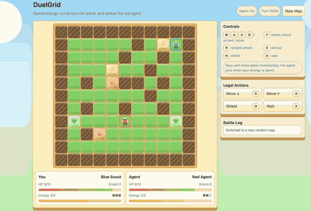
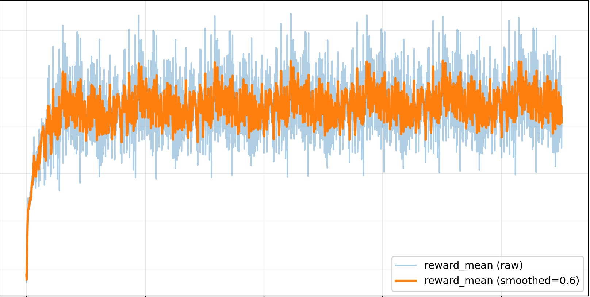
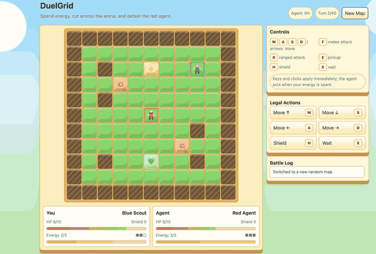

Training CLI reference#
areno train
Run SFT, DPO, GSPO, GRPO, or PPO training with the local Areno backend. The command owns the full loop: dataset loading, optional normalization, rollout, reward scoring, loss computation, optimizer steps, metrics, and checkpoint saving.
The command selects CUDA on Linux and MLX on native Apple Silicon. It has no backend flag and does not fall back between runtimes. See Apple Silicon and MLX for the MLX installation and execution model.
areno train \
--ckpt Qwen/Qwen3-0.6B \
--dataset-path gsm8k:main \
--dataset-loader-fn examples/math/dataset_loader.py \
--reward-fn-path examples/math/math_verify_reward.py \
--algo gspo \
--tp-size 1 \
--world-size 1 \
--batch-size 2 \
--n-samples 2 \
--mini-bs 1
areno train#
Start a training run.
Options are grouped into sections that match areno train --help, following
the RL training loop: Basic (what to run plus devices), Rollout
(generate and score completions), Train (consume rollouts and update
weights), Checkpoint (produced artifacts), and Observability (logs).
Basic#
Inputs, dataset loader, the algorithm and run length, and device counts.
--ckpt TEXTActor model/tokenizer checkpoint path or remote model repo ID.
--dataset-path TEXTTraining dataset path, Hugging Face
save_to_diskdirectory, or remote dataset reference.--model-hub [hf|modelscope]Remote hub used when
--ckpt, role checkpoints, or--dataset-pathare not local paths. Use--model-hub hffor Hugging Face and--model-hub modelscopefor ModelScope. Default:modelscope.
Dataset references use repo/name, repo/name:config, or
repo/name:config:split. Examples: gsm8k:main and
AI-MO/NuminaMath-TIR.
--dataset-path also accepts JSON/JSONL, Parquet, CSV/TSV, Arrow, and
datasets.save_to_disk(...) directories.
--dataset-loader-fn TEXTOptional Python dataset loader function as
file.pyorfile.py:function.
Use --dataset-loader-fn when the raw dataset does not already match the
trainer schema. Without a loader, Areno passes dataset rows through unchanged,
except for SFT where a loader is required. See Dataset loaders for the
per-algorithm loader contracts.
--algo TEXTTraining algorithm registered in
areno.api. Default:gspo.
Built-in algorithms: sft, dpo, gspo, grpo, ppo.
--epochs INTEGERNumber of dataset epochs to train. Default:
10.--max-steps INTEGEROptional global trainer step cap. Training stops after this many step indices have completed, even if the current epoch still has more batches.
--world-size INTEGERTotal training device count. Default:
8. When--train-devicesis provided, AReno infers this value from the expanded device list. MLX is single-process and normalizes the CLI default to1; explicitly supplied MLX values must be1.--tp-size INTEGER,--train-tp-size INTEGERTensor parallel size for training. The two option names are aliases. Default:
4.Tensor parallelism is CUDA-only. MLX normalizes the CLI default to
1; explicitly supplied MLX values must be1.
world-size must be divisible by tp-size.
--sequence-parallel / --no-sequence-parallelExplicitly enable or disable sequence parallelism for CUDA training. When neither flag is passed, AReno uses
sequence_parallelfrom the loaded checkpoint’s model configuration. The CLI value takes precedence over the model configuration. Sequence parallelism is inactive whentp-sizeis1even if it is requested.--train-devices TEXTComma-separated logical CUDA device indices or inclusive ranges used by training. For example,
0..8,11..29includes both endpoints. AReno derivesworld-sizefrom the expanded count. When omitted, AReno uses0throughworld-size - 1. CUDA only; MLX rejects device lists.
Rollout#
Everything that generates and scores completions: batch volume, sequence limits, sampling, decode runtime, the agentic-rollout hooks, and the reward signal.
--rollout-devices TEXTComma-separated logical CUDA device indices or inclusive ranges for an independent rollout engine. They may overlap
--train-deviceswhen the GPU has enough memory for both worker processes. This option is valid only for online algorithms that generate rollouts. CUDA only; MLX uses the same in-process model for rollout and training.--rollout-tp-size INTEGERTensor parallel size of the independent rollout engine. It defaults to the training
tp-size. The rollout device count must be divisible by this value. CUDA only.--policy-sync-bucket-mb INTEGERMaximum reusable GPU buffer used while streaming policy weights from the training engine to the rollout engine. Default:
64MiB. CUDA only. MLX does not copy policy weights to a second rollout model.
R3 is enabled automatically for sparse-MoE RL training on CUDA. AReno records each token’s expert ids during rollout and reuses those ids in the policy training forward while recomputing routing weights from the current router logits. Dense models and the MLX backend retain their original paths.
For example, the following uses four visible GPUs for training and two different visible GPUs for rollout:
areno train \
--algo gspo \
--ckpt Qwen/Qwen3-8B \
--dataset-path ... \
--reward-fn-path ... \
--world-size 4 \
--tp-size 4 \
--train-devices 0,1,2,3 \
--rollout-devices 4,5 \
--rollout-tp-size 2
--batch-size INTEGERPrompt or pair batch size. Default:
32.--n-samples INTEGERRollout samples per prompt for RL algorithms. Default:
8.--max-running-prompts INTEGEROverride global concurrent rollout prompts. Defaults to
batch-size * n-samplesfor rollout algorithms.--max-prompt-tokens INTEGERMaximum tokenized prompt length. Default:
1024.--max-new-tokens INTEGERMaximum generated or supervised response tokens. Default:
3071.--max-context-len INTEGERMaximum total context tokens for agentic rollout trajectories. This counts the original prompt plus all generated assistant turns concatenated into the training row. Defaults to the model context limit.
--temperature FLOATRollout sampling temperature. Default:
1.0.--top-k INTEGERRollout top-k;
-1disables top-k filtering. Default:-1.--top-p FLOATRollout top-p. Default:
1.0.--greedyUse greedy rollout decoding.
--eager-decodeDisable decode CUDA graph and run rollout decode eagerly. CUDA only.
--drop-rollout-stateDrop completed rollout KV/cache state after each step to save device memory. By default, Areno keeps reusable rollout state between steps for lower setup overhead. Supported by both CUDA and MLX.
--attn-backend [flash|native]Attention backend. Default:
flash. Usenativeto run withoutflash-attnon the areno_accel native compatibility path. AReno automatically falls back tonativeon flash-attn-unsupported GPUs such as Tesla T4 and prints a warning.nativeis slower thanflashon supported GPUs. CUDA only; MLX uses its model-native attention implementation.--disable-thinkingPass
enable_thinking=Falseto tokenizer chat templates when supported. This is useful for models whose tokenizer template exposes an explicit thinking-mode switch, such as some reasoning/chat checkpoints. Tokenizers that do not acceptenable_thinkingautomatically fall back to their normal chat-template call.
Training rollouts run inside a rollout session. The session owns actor lifecycle, rollout cache state, backend-native decode state, and cleanup between rollout and train phases. Direct prompt rollout and agentic rollout both use the same session lifecycle. CUDA may additionally own onload/offload and CUDA graph state; MLX retains one in-process model.
--agent-fn TEXTPython file defining
async def run_agent(ctx, batch). When provided, online RL algorithms use agentic rollout mode instead of direct prompt completion. The agent receives a local OpenAI-compatible base URL fromctx.get_base_url()and can call/v1/chat/completionswith tools. Usebatch.iter_samples()to iterate the expandedbatch-size * n-samplesagent tasks. The function returns explicit trajectories: oneAgentTrajectoryTurn, oneAgentTrajectory, or an iterable of either. Each turn must carry itsAgentItem, message list, and OpenAI response.--train-tool-resultsInclude tool-result spans in policy loss. Disabled by default because tool results are environment observations rather than policy actions. Assistant text and assistant tool-call spans are trainable by default.
Agentic trajectories can contain multiple chat-completion turns for the same
prompt/sample pair. The agent owns the OpenAI-style message list and returns
trajectory turns with the model response; Areno converts those turns into token
rows, rollout logprobs, parsed assistant tool calls, reward records, and loss
masks.
Tool-result/context spans are included in the token row for correct scoring
but are masked from policy loss unless --train-tool-results is set.
When --max-context-len is set, filtering uses the full concatenated token
row for the whole agentic trajectory, not only the latest chat-completion turn.
--reward-fn-path TEXTPython file defining
reward_fn(record).
Reward files should expose:
def reward_fn(record):
return 0.0
--reward-ckpt TEXTOptional PPO reward model checkpoint path or remote model repo ID.
Parameter tuning#
--tune-paramsProbe rollout and training memory before starting the real run, then fill safe values for
--max-running-prompts,--batch-sizeand--mini-bs. This is intended for rollout-based algorithms such as GSPO, GRPO and PPO, including agentic rollouts where the right concurrency is hard to estimate by hand.
The tuner uses dummy-loaded model weights and synthetic token rows, so it
measures the selected model architecture, --world-size/--tp-size,
sequence lengths, CUDA graph setup, optimizer state, and train microbatch
memory without consuming a real dataset row or writing checkpoints. It keeps
the user-provided --tp-size, --n-samples, --adam-8bit, sequence
limits, model path, algorithm, and backend settings.
Search is deliberately conservative:
rollout candidates are tried from larger to smaller
--max-running-promptsvalues;if
--max-running-promptsis explicitly provided, rollout probing is skipped and that concurrency is used directly for training-parameter tuning;training uses the rollout-selected concurrency to derive a batch size, then tries larger to smaller
--mini-bsvalues;--drop-rollout-stateis enabled for the tuned run so rollout memory does not remain resident during the training probe or optimizer step.
--mem-frac FLOATTarget maximum GPU memory fraction for tuning. Default:
0.9. Lower this when sharing a node or when the real reward/agent path has additional GPU users.--tune-max-samples INTEGERUpper bound for sampled rollout/train rows considered during tuning. Default:
256. The rollout search does not try--max-running-promptsabove this value, and the derived train batch size is capped bytune-max-samples / n-samples.
Example:
areno train \
--ckpt /path/to/Qwen3.5-4B \
--dataset-path examples/agentic/coding/dataset.jsonl \
--dataset-loader-fn examples/agentic/coding/dataset_loader.py \
--reward-fn-path examples/agentic/coding/reward.py \
--agent-fn examples/agentic/coding/run_agent.py \
--algo gspo \
--world-size 8 \
--tp-size 4 \
--n-samples 8 \
--max-new-tokens 2048 \
--max-context-len 32768 \
--tune-params \
--mem-frac 0.9 \
--tune-max-samples 256
Train#
Everything that consumes rollouts and updates weights: training batching and memory, the policy optimizer, reference/critic models, and the per-algorithm loss knobs. Each algorithm-specific flag applies only to the algorithms named in its description; flags for other algorithms are ignored.
--mini-bs INTEGERNumber of training rows in one backend gradient microbatch. Default:
16. The meaning is identical on CUDA and MLX; reducing it limits activation memory but does not changebatch-sizeorn-samples.--gradient-accumulation-steps INTEGEROptimizer step interval in microbatches. Defaults to accumulating all mini-batches in one train call.
--activation-checkpointing / --no-activation-checkpointingEnable decoder-layer activation recompute during training. Default: enabled.
--optimizer-state-offload [none|cpu|disk]Select CUDA optimizer-state residency.
nonekeeps state on the training device.cpumoves state to host memory between train calls.diskstages a bounded bucket group through host memory and stores the state in persistent writable raw-mmap files, copying each bucket back only when the next optimizer step needs it. Default:none. This option is supported only by the CUDA backend and applies to both FP32-master AdamW and--adam-8bitor--adam-4bit.--optimizer-state-offload-dir DIRECTORYRequired when
--optimizer-state-offload diskis selected. Use a fast local NVMe filesystem with enough free capacity for the optimizer state. AReno creates a process-private subdirectory and removes it on normal optimizer onload or teardown. The mmap files are runtime scratch state, not restartable checkpoints; use--save-pathfor checkpointing.--optimizer-state-offload-batch-size INTEGERNumber of optimizer buckets assigned to each persistent mmap and flushed together. Default:
1. A smaller value bounds CPU staging memory more tightly; a larger value creates fewer files and flush calls. This setting is used only by disk offload.--lr FLOATPolicy optimizer learning rate. Default:
1.0e-6.--min-lr FLOATPolicy optimizer minimum learning rate. Default:
1.0e-7.--lr-decay-steps INTEGERPolicy LR decay steps. Default:
1000.--lr-decay-style TEXTPolicy LR decay style. Default:
cosine.--adam-beta1 FLOATPolicy optimizer Adam beta1. Default:
0.9.--adam-beta2 FLOATPolicy optimizer Adam beta2. Default:
0.999.--adam-8bitUse block-wise 8-bit Adam moment states instead of FP32 Adam states. CUDA and MLX use the signed dynamic-tree codebook for the first moment and the unsigned dynamic codebook for the second moment from 8-Bit Optimizers via Block-wise Quantization. Token-embedding weights and gradients retain their normal model precision, while their optimizer moments remain FP32 to avoid quantizing embedding-gradient outliers. Other initialized moment state uses two bytes per parameter plus FP32 block scales. CUDA training metrics expose
adam8_quantized_state_bytes,adam8_fp32_exempt_bytes,adam8_block_metadata_bytes, andadam8_total_bytesfor initialized DP-local optimizer state.This option does not insert a normalization layer or reinitialize a loaded embedding. The paper’s Stable Embedding forward architecture is not enabled for AReno’s current RoPE-only language models because they do not expose the compatible additive-position-embedding boundary. Supported by both native backends; validate convergence when changing optimizer precision.
--adam-4bitUse packed 4-bit first moments, factored row/column second moments for tensors of rank two or greater, B128 fallback for vectors, and BF16 streamed DP gradient shards. This option is CUDA-only and cannot be combined with
--adam-8bit. See Using 4-bit AdamW for complete usage examples.--unfreeze-mm-towerTrain recognized vision/audio encoder tower parameters. Towers are frozen by default.
--unfreeze-mm-projector,--unfreeze-mm-mergerTrain recognized multimodal projector, merger, resampler, or embedder parameters. The two option names are aliases.
--mm-tower-lr FLOAT,--mm-projector-lr FLOATOptional learning rates for unfrozen tower and projector/merger parameter groups. Each defaults to the policy
--lr. The corresponding--mm-*-min-lr,--mm-*-lr-steps, and--mm-*-lr-styleoptions control each group’s schedule independently.--weight-decay FLOATPolicy optimizer weight decay. Default:
1.0e-2.--grad-clip-norm FLOATPolicy gradient clipping norm. Default:
1.0.--ref-ckpt TEXTOptional PPO/DPO reference model checkpoint path or remote model repo ID.
--critic-ckpt TEXTOptional PPO critic model checkpoint path or remote model repo ID.
--critic-lr FLOATPPO critic optimizer learning rate. Default:
1.0e-5.--critic-warmup-steps INTEGERPPO critic-only warmup steps before actor updates. Default:
20.--gspo-clip-eps FLOATGSPO sequence-ratio clipping epsilon. Default:
3.0e-4.--grpo-clip-eps FLOATGRPO token-ratio clipping epsilon. Default:
0.2.--dpo-beta FLOATDPO preference margin temperature. Default:
0.1.--use-kl-loss / --no-use-kl-lossEnable PPO actor KL loss. Default: enabled.
--kl-loss-coef FLOATPPO actor KL loss coefficient. Default:
0.001.--kl-loss-type TEXTPPO actor KL loss type. Default:
low_var_kl.--clip-eps FLOATPPO policy clipping epsilon. Default:
0.2.--clip-ratio-c FLOATPPO lower policy clipping bound multiplier. Default:
3.0.--value-clip-eps FLOATPPO value clipping epsilon. Default:
0.5.--value-loss-coef FLOATPPO value loss coefficient. Default:
0.5.--gamma FLOATPPO GAE discount. Default:
1.0.--lam FLOATPPO GAE lambda. Default:
0.95.
Checkpoint#
--save-path TEXTOptional checkpoint output directory.
--save-interval INTEGERSave checkpoint every N train steps. Default:
100.
Observability#
--metrics-log-dir TEXTTensorBoard metrics log directory. See Observability for the
rollout/*,train/*, andtime/*metric namespaces and debugging log examples.
Examples#
Tiny training smoke test#
Use this command when you only want to check that a machine can run one small official training task end to end:
areno train \
--ckpt Qwen/Qwen3-0.6B \
--dataset-path gsm8k:main \
--dataset-loader-fn examples/math/dataset_loader.py \
--reward-fn-path examples/math/math_verify_reward.py \
--algo gspo \
--tp-size 1 \
--world-size 1 \
--batch-size 1
This verifies the training wiring; it is not intended to measure final model quality.
GSPO math training#
areno train \
--ckpt Qwen/Qwen3-0.6B \
--dataset-path gsm8k:main \
--dataset-loader-fn examples/math/dataset_loader.py \
--reward-fn-path examples/math/math_verify_reward.py \
--algo gspo \
--tp-size 1 \
--world-size 1 \
--batch-size 2 \
--n-samples 2 \
--mini-bs 1
SFT instruction tuning#
areno train \
--ckpt Qwen/Qwen3-0.6B \
--dataset-path yahma/alpaca-cleaned \
--dataset-loader-fn examples/sft/alpaca/dataset_loader.py \
--algo sft \
--tp-size 1 \
--world-size 1 \
--batch-size 2 \
--mini-bs 1
SFT loaders must normalize raw rows to prompt and response dictionaries.
The trainer performs tokenization and trains on the response suffix.
DPO preference training#
areno train \
--ckpt /path/to/policy \
--ref-ckpt /path/to/reference \
--dataset-path /path/to/dpo.jsonl \
--dataset-loader-fn /path/to/dpo_dataset_loader.py \
--algo dpo \
--tp-size 1 \
--world-size 1
The DPO loader should normalize each row to prompt, chosen, and
rejected.
PPO with reward and critic roles#
areno train \
--ckpt /path/to/policy \
--ref-ckpt /path/to/reference \
--reward-ckpt /path/to/reward-model \
--critic-ckpt /path/to/critic \
--dataset-path /path/to/data \
--dataset-loader-fn examples/math/dataset_loader.py \
--algo ppo \
--tp-size 4 \
--world-size 8
Agentic Tic-Tac-Toe#
python examples/agentic/tictactoe/dataset_generator.py \
--output /tmp/areno-tictactoe.jsonl \
--count 256 \
--seed 2026
areno train \
--ckpt Qwen/Qwen3-0.6B \
--dataset-path /tmp/areno-tictactoe.jsonl \
--dataset-loader-fn examples/agentic/tictactoe/dataset_loader.py \
--reward-fn-path examples/agentic/tictactoe/reward.py \
--agent-fn examples/agentic/tictactoe/run_agent.py \
--algo gspo \
--tp-size 1 \
--world-size 1 \
--batch-size 32 \
--n-samples 8 \
--max-new-tokens 32
The agent function can use the OpenAI Python client against
ctx.get_base_url() and returns explicit AgentTrajectory or
AgentTrajectoryTurn objects. Areno converts them to tokens, rollout
logprobs, parsed tool_calls, rewards, and loss masks, then feeds the
resulting batch to the same policy trainer used by non-agentic rollouts.
Agentic DuelGrid#
DuelGrid is a turn-based grid tactics example for agentic RLVR. The user
controls U and the LLM controls A with JSON action sequences such as
MOVE, ATTACK, RANGED_ATTACK, PICKUP, and SHIELD.
python examples/agentic/duelgrid/dataset_generator.py \
--count 256 \
--output /tmp/areno-duelgrid.jsonl
areno train \
--ckpt Qwen/Qwen3-0.6B \
--dataset-path /tmp/areno-duelgrid.jsonl \
--dataset-loader-fn examples/agentic/duelgrid/dataset_loader.py \
--reward-fn-path examples/agentic/duelgrid/reward.py \
--agent-fn examples/agentic/duelgrid/run_agent.py \
--algo gspo \
--tp-size 1 \
--world-size 1
The browser UI can replay the same rule engine:
python examples/agentic/duelgrid/web_ui.py \
--base-url http://127.0.0.1:8000/v1 \
--api-key EMPTY \
--model policy
Before GSPO/RLVR post-training, Gemma-E2B-it performs poorly in DuelGrid and often oscillates between nearby tiles. After training, it learns to collect health and energy pickups, chase the user, attack when it has position, and avoid trap tiles while spending its turn energy. The reward curve improves quickly early in training and then stabilizes after the policy has learned the game loop.
Train before |
Reward |
Train after |
|---|---|---|
 |
 |
 |
{kind=link}
{kind=link}
{kind=link}
Help#
areno train --help